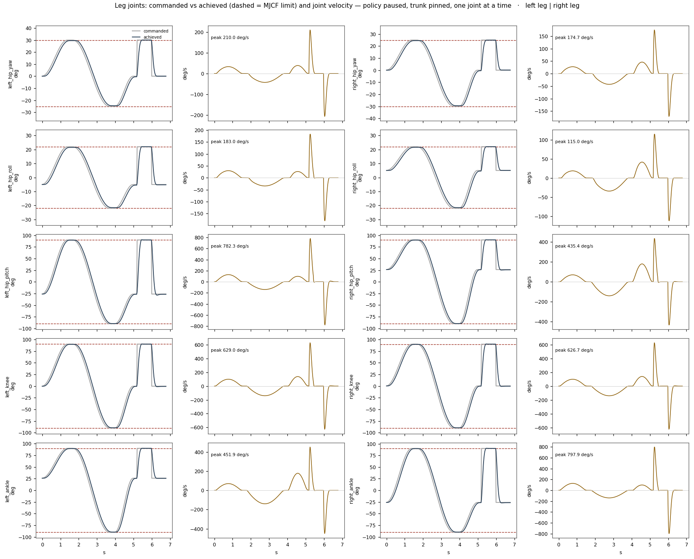
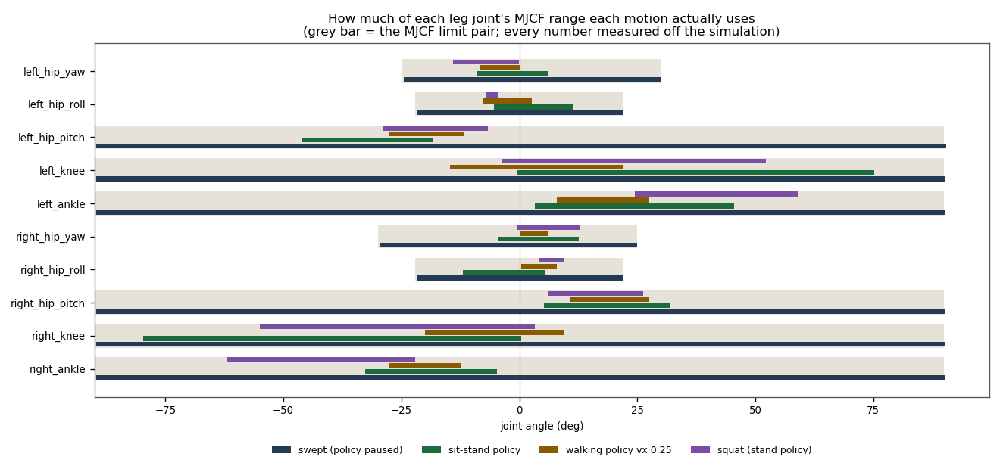
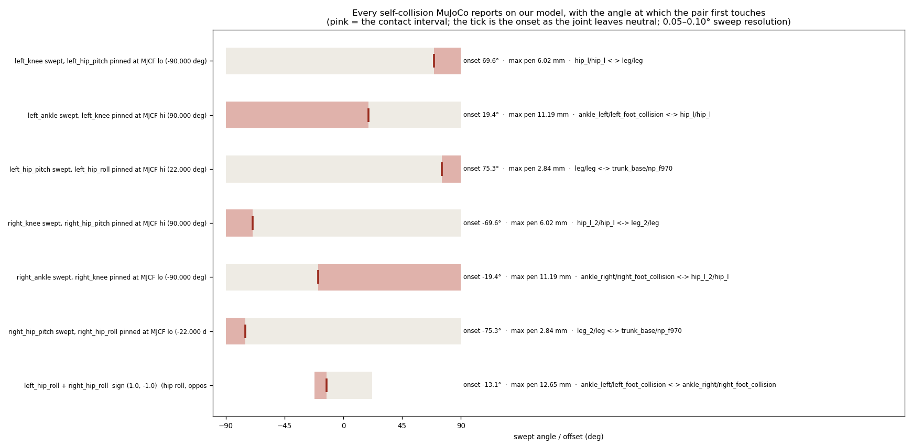
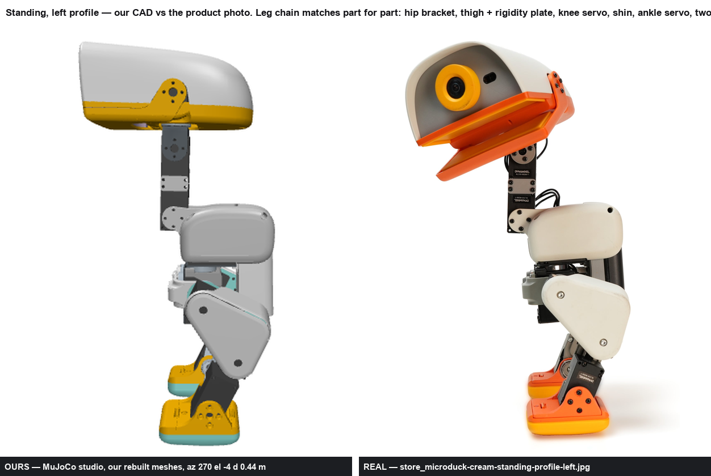
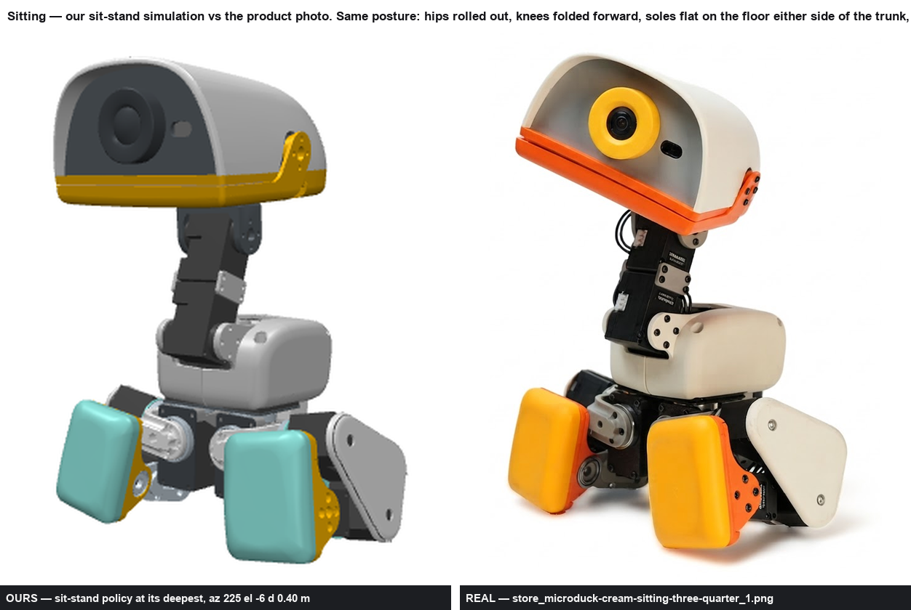

Leif, 2026-09-02: “show me renders of the mechanics like our cad system walking, zoom in on joints as they move and the head kmvoing around and the legs moving around.” Every leg joint is driven through its whole MJCF range one at a time, then in the postures a one-at-a-time sweep cannot reach, then by Pollen's own policies. Everything below is read off the simulation — Pollen's MJCF verbatim with OUR rebuilt meshes on it (sim/microduck_ours_allcollisions.xml, built by sim/swap_meshes.py).
The stand policy has no leg command slot — the ONNX metadata's command_names is twist,head_pose, and the 13-slot command vector is [vx vy wz | neck_pitch head_pitch head_yaw head_roll | body x y z roll pitch yaw]. So a single leg joint cannot be commanded through the policy at all. The per-joint sweeps below therefore run with the policy paused and data.ctrl written directly, the trunk pinned (the duck held in the hand). That choice is forced, and it is measured:
FAIL - the duck tips over — Commanded knee flexion of only 11.459 deg, policy paused. Max trunk tilt reached 88.56°, trunk height 118.5 mm → 47.7 mm.
standing is not an open-loop pose: with the policy paused, a commanded knee flexion of only 11.459 deg pitches the trunk past the 60 deg fall rule. The squat below therefore runs WITH Pollen's stand policy, driven through its body-z command slot - stated because it is the answer to 'can direct joint targets be used'.
The squat below therefore runs with Pollen's BEST_alpha_stand policy, driven through the body-z slot of its command vector: trunk 118.5 mm → 91.1 mm (a 27.48 mm drop), max tilt 1.45°, and it does not fall.
| joint | MJCF range (deg) | cite | travel reached | of range | peak vel (deg/s) | tracking RMS (deg) | sit-stand travel | sit-stand peak | walk travel | walk peak | squat travel |
|---|---|---|---|---|---|---|---|---|---|---|---|
| left_hip_yaw | -25.000 … 30.000 | sim/microduck_ours.xml:112 | 54.536 | 99.2% | 210.0 | 4.47 | 15.136 | 163.6 | 8.494 | 52.3 | 14.050 |
| left_hip_roll | -22.000 … 22.000 | sim/microduck_ours.xml:125 | 43.634 | 99.2% | 183.0 | 4.02 | 16.711 | 114.0 | 10.512 | 103.0 | 2.656 |
| left_hip_pitch | -90.000 … 90.000 | sim/microduck_ours.xml:134 | 180.135 | 100.1% | 782.3 | 16.81 | 27.918 | 325.6 | 15.995 | 154.0 | 22.340 |
| left_knee | -90.000 … 90.000 | sim/microduck_ours.xml:149 | 179.859 | 99.9% | 629.0 | 13.27 | 75.606 | 423.6 | 36.863 | 328.8 | 55.979 |
| left_ankle | -90.000 … 90.000 | sim/microduck_ours.xml:159 | 179.685 | 99.8% | 451.9 | 10.59 | 42.276 | 380.2 | 19.605 | 181.3 | 34.363 |
| right_hip_yaw | -30.000 … 25.000 | sim/microduck_ours.xml:265 | 54.476 | 99.0% | 174.7 | 3.95 | 16.906 | 116.0 | 6.066 | 32.0 | 13.411 |
| right_hip_roll | -22.000 … 22.000 | sim/microduck_ours.xml:278 | 43.529 | 98.9% | 115.0 | 2.96 | 17.355 | 166.3 | 7.602 | 93.7 | 5.317 |
| right_hip_pitch | -90.000 … 90.000 | sim/microduck_ours.xml:287 | 179.960 | 100.0% | 435.4 | 10.70 | 26.754 | 372.1 | 16.655 | 190.0 | 20.160 |
| right_knee | -90.000 … 90.000 | sim/microduck_ours.xml:302 | 179.929 | 100.0% | 626.7 | 13.20 | 80.144 | 730.7 | 29.507 | 285.9 | 58.394 |
| right_ankle | -90.000 … 90.000 | sim/microduck_ours.xml:312 | 179.864 | 99.9% | 797.9 | 16.46 | 27.961 | 335.8 | 15.295 | 116.9 | 39.719 |
Peak velocity is a model number, not a servo number. The MJCF actuator is NOT the datasheet servo. Pollen's class chosen_actuator gives every leg joint forcerange +-0.96 N.m, while the repo's verified entry for the fitted servo (Dynamixel XL330-M288-T, out/verify/electronics_verify.json, ROBOTIS eManual cited there) gives stall 0.52 N.m at 5.0 V - the model is 1.846x stronger than the cited stall torque. The class also sets kv = 0 and the model carries NO joint velocity limit, so the step-response peak velocities below are what the MODEL can do, not what the servo can do. The XL330's no-load speed is not recorded anywhere in this repo: CANNOT DETERMINE, and it must be added before any of these peak velocities is quoted as a hardware capability.
peak_velocity_deg_s is measured during a commanded STEP from DEFAULT_POSE to the MJCF limit with the policy paused and the trunk pinned. Under Pollen's own policies the same joints stay far slower - see sitstand_policy and squat below.


The collision set of microduck_ours_allcollisions.xml is trunk_base/power_support, trunk_base/np_f970, hip_l/hip_l, leg/leg, ankle_left/left_foot_collision, jaw_soft/top_head_shell, jaw_soft/jaw, jaw_soft/bottom_head_shell, hip_l_2/hip_l, leg_2/leg, ankle_right/right_foot_collision. Two of them (the shins) were also re-pointed to OUR rebuilt mesh (leg__ours) and swept again — same verdicts. MuJoCo collides mesh geoms as their CONVEX HULLS. The trunk power_support geom is class self_collision_only (contype/conaffinity 2) and is the only geom in that group, so it can never produce a contact - stated, not silently passed.
The detector was made to fire before any CLEAR was trusted. a check that cannot fail is not a check - the self-collision detector was broken on purpose and watched to fire, in the same model, before any CLEAR verdict below was trusted Negative control: DEFAULT_POSE, trunk at 0 0 0.12 → 0 self-contacts. Positive controls: left_hip_roll -22.000 deg and right_hip_roll +22.000 deg (both driven inward) -> 1 contacts; left_knee +90.000 deg with left_hip_pitch -90.000 deg -> 4 contacts. Measured with mujoco 3.12.0, mj_forward on the scene_xml() wrap of sim/microduck_ours_allcollisions.xml; floor contacts excluded by geom id
One joint at a time, every other joint at DEFAULT_POSE, 0.05° steps, mj_forward every step:
| joint | swept (deg) | samples | verdict | pairs |
|---|---|---|---|---|
| left_hip_yaw | -25.000 … 30.000 | 1101 | CLEAR | — |
| left_hip_roll | -22.000 … 22.000 | 881 | CLEAR | — |
| left_hip_pitch | -90.000 … 90.000 | 3601 | CLEAR | — |
| left_knee | -90.000 … 90.000 | 3601 | CLEAR | — |
| left_ankle | -90.000 … 90.000 | 3601 | CLEAR | — |
| right_hip_yaw | -30.000 … 25.000 | 1101 | CLEAR | — |
| right_hip_roll | -22.000 … 22.000 | 881 | CLEAR | — |
| right_hip_pitch | -90.000 … 90.000 | 3601 | CLEAR | — |
| right_knee | -90.000 … 90.000 | 3601 | CLEAR | — |
| right_ankle | -90.000 … 90.000 | 3601 | CLEAR | — |
Two joints off default, and both legs driven together — the postures a one-at-a-time sweep cannot reach. The onset is the contact angle nearest the neutral pose, i.e. the angle at which the pair first touches as the joint leaves neutral:
| case | verdict | pair | onset (deg) | contact interval (deg) | max penetration (mm) |
|---|---|---|---|---|---|
| left_knee swept, left_hip_pitch pinned at MJCF lo (-90.000 deg) | TOUCHES | hip_l/hip_l <-> leg/leg | 69.6 | 69.6 … 90.0 | 6.024 |
| left_knee swept, left_hip_pitch pinned at MJCF hi (90.000 deg) | CLEAR | — | — | — | — |
| left_ankle swept, left_knee pinned at MJCF lo (-90.000 deg) | CLEAR | — | — | — | — |
| left_ankle swept, left_knee pinned at MJCF hi (90.000 deg) | TOUCHES | ankle_left/left_foot_collision <-> hip_l/hip_l | 19.4 | -90.0 … 19.4 | 11.195 |
| left_hip_pitch swept, left_hip_roll pinned at MJCF lo (-22.000 deg) | CLEAR | — | — | — | — |
| left_hip_pitch swept, left_hip_roll pinned at MJCF hi (22.000 deg) | TOUCHES | leg/leg <-> trunk_base/np_f970 | 75.3 | 75.3 … 90.0 | 2.845 |
| right_knee swept, right_hip_pitch pinned at MJCF lo (-90.000 deg) | CLEAR | — | — | — | — |
| right_knee swept, right_hip_pitch pinned at MJCF hi (90.000 deg) | TOUCHES | hip_l_2/hip_l <-> leg_2/leg | -69.6 | -90.0 … -69.6 | 6.023 |
| right_ankle swept, right_knee pinned at MJCF lo (-90.000 deg) | TOUCHES | ankle_right/right_foot_collision <-> hip_l_2/hip_l | -19.4 | -19.4 … 90.0 | 11.195 |
| right_ankle swept, right_knee pinned at MJCF hi (90.000 deg) | CLEAR | — | — | — | — |
| right_hip_pitch swept, right_hip_roll pinned at MJCF lo (-22.000 deg) | TOUCHES | leg_2/leg <-> trunk_base/np_f970 | -75.3 | -90.0 … -75.3 | 2.842 |
| right_hip_pitch swept, right_hip_roll pinned at MJCF hi (22.000 deg) | CLEAR | — | — | — | — |
| left_hip_roll + right_hip_roll sign (1.0, 1.0) (hip roll, same sense) | CLEAR | — | — | — | — |
| left_hip_roll + right_hip_roll sign (1.0, -1.0) (hip roll, opposed (knees in/out)) | TOUCHES | ankle_left/left_foot_collision <-> ankle_right/right_foot_collision | -13.1 | -22.0 … -13.1 | 12.650 |
| left_hip_yaw + right_hip_yaw sign (1.0, -1.0) (hip yaw, opposed (toes in/out)) | CLEAR | — | — | — | — |
| left_hip_pitch + right_hip_pitch sign (1.0, 1.0) (hip pitch, same sense (scissor)) | CLEAR | — | — | — | — |
| left_knee + right_knee sign (1.0, -1.0) (knee, opposed) | CLEAR | — | — | — | — |

“With the servo and the bearing side both visible” is a claim about a camera, so it is checked as one. For every close-up camera the renderer uses, the world position of every xl330 geom and every 22×16×4 bearing geom is projected into that camera's frustum (fovy 45.0°, panel 400×500 px, half-FOV 18.33° × 22.50°) and counted if it lands in the foreground. 20 of 20 cameras carry both. a frustum test, not an occlusion test: it proves the part lies inside the camera cone and in the foreground (nearer than 1.5x the camera distance), not that nothing is drawn in front of it. The rendered frames were also read back by eye - see out/motion/frames/legs_*.png.
| camera | az / el / d | verdict | nearest servo | nearest bearing |
|---|---|---|---|---|
| left_hip_yaw/profile | 270 / -4 / 0.20 m | PASS both | xl330 upper_leg_left @ 0.166 m | seeed_bearing__configuration__22x16x4 hip_l @ 0.179 m |
| left_hip_yaw/three_quarter | 225 / -12 / 0.22 m | PASS both | xl330 upper_leg_left @ 0.208 m | seeed_bearing__configuration__22x16x4 hip_l @ 0.210 m |
| left_hip_roll/profile | 270 / -4 / 0.20 m | PASS both | xl330 upper_leg_left @ 0.166 m | seeed_bearing__configuration__22x16x4 hip_l @ 0.178 m |
| left_hip_roll/three_quarter | 225 / -12 / 0.22 m | PASS both | xl330 upper_leg_left @ 0.217 m | seeed_bearing__configuration__22x16x4 hip_l @ 0.219 m |
| left_hip_pitch/profile | 270 / -4 / 0.20 m | PASS both | xl330 upper_leg_left @ 0.188 m | seeed_bearing__configuration__22x16x4 hip_l @ 0.202 m |
| left_hip_pitch/three_quarter | 225 / -12 / 0.22 m | PASS both | xl330 upper_leg_left @ 0.217 m | seeed_bearing__configuration__22x16x4 hip_l @ 0.221 m |
| left_knee/profile | 270 / -4 / 0.20 m | PASS both | xl330 upper_leg_left @ 0.182 m | seeed_bearing__configuration__22x16x4 hip_l @ 0.197 m |
| left_knee/three_quarter | 225 / -12 / 0.22 m | PASS both | xl330 upper_leg_left @ 0.191 m | seeed_bearing__configuration__22x16x4 hip_l @ 0.196 m |
| left_ankle/profile | 270 / -4 / 0.20 m | PASS both | xl330 upper_leg_left @ 0.209 m | seeed_bearing__configuration__22x16x4 upper_leg_left @ 0.222 m |
| left_ankle/three_quarter | 225 / -12 / 0.22 m | PASS both | xl330 upper_leg_left @ 0.221 m | seeed_bearing__configuration__22x16x4 hip_l @ 0.227 m |
| right_hip_yaw/profile | 90 / -4 / 0.20 m | PASS both | xl330 upper_leg_right @ 0.166 m | seeed_bearing__configuration__22x16x4 hip_l_2 @ 0.179 m |
| right_hip_yaw/three_quarter | 45 / -12 / 0.22 m | PASS both | xl330 upper_leg_right @ 0.194 m | seeed_bearing__configuration__22x16x4 hip_l_2 @ 0.207 m |
| right_hip_roll/profile | 90 / -4 / 0.20 m | PASS both | xl330 upper_leg_right @ 0.166 m | seeed_bearing__configuration__22x16x4 hip_l_2 @ 0.178 m |
| right_hip_roll/three_quarter | 45 / -12 / 0.22 m | PASS both | xl330 upper_leg_right @ 0.178 m | seeed_bearing__configuration__22x16x4 upper_leg_right @ 0.192 m |
| right_hip_pitch/profile | 90 / -4 / 0.20 m | PASS both | xl330 upper_leg_right @ 0.188 m | seeed_bearing__configuration__22x16x4 hip_l_2 @ 0.202 m |
| right_hip_pitch/three_quarter | 45 / -12 / 0.22 m | PASS both | xl330 upper_leg_right @ 0.205 m | seeed_bearing__configuration__22x16x4 upper_leg_right @ 0.219 m |
| right_knee/profile | 90 / -4 / 0.20 m | PASS both | xl330 upper_leg_right @ 0.182 m | seeed_bearing__configuration__22x16x4 hip_l_2 @ 0.197 m |
| right_knee/three_quarter | 45 / -12 / 0.22 m | PASS both | xl330 upper_leg_right @ 0.205 m | seeed_bearing__configuration__22x16x4 upper_leg_right @ 0.219 m |
| right_ankle/profile | 90 / -4 / 0.20 m | PASS both | xl330 upper_leg_right @ 0.209 m | seeed_bearing__configuration__22x16x4 upper_leg_right @ 0.222 m |
| right_ankle/three_quarter | 45 / -12 / 0.22 m | PASS both | xl330 upper_leg_right @ 0.205 m | seeed_bearing__configuration__22x16x4 upper_leg_right @ 0.219 m |

